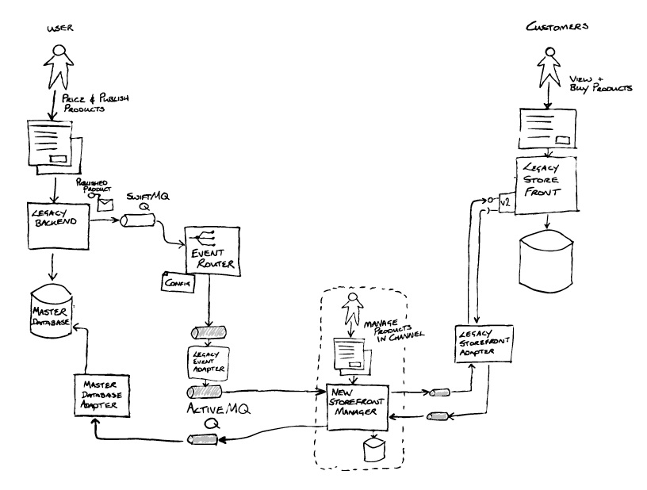

Patterns of Legacy Displacement
Como modernizar infraestruturas tecnológicas obsoletas de forma incremental, segura e sustentável sem a necessidade de paralisar as operações de negócio.
Muitas organizações operam com sistemas legados essenciais que, ao longo do tempo, tornaram-se onerosos, frágeis e difíceis de evoluir. Uma reação comum é tentar reescrever o sistema inteiro do zero — uma abordagem do tipo Big Bang —, mas essa estratégia historicamente acarreta prazos exorbitantes, estouro de orçamento e riscos severos de interrupção operacional.
O conceito de Legacy Displacement propõe o deslocamento gradual do legado: em vez de uma substituição imediata, decompõe-se o sistema e substitui-se uma funcionalidade de cada vez. Durante a transição, sistemas antigos e novos coexistem de forma orquestrada, permitindo validações contínuas em ambiente de produção com mínimo atrito para os usuários.
Trade-offs Arquiteturais
Pontos Fortes
Vantagens da Abordagem
-
Mitigação Radical de Risco Operacional
Evita o colapso do negócio típico de viragens "Big Bang"; caso surja uma anomalia num módulo novo, a reversão ou correção é cirúrgica e imediata sem paralisar o sistema central.
-
Entrega Contínua e Antecipada de Valor
O retorno do investimento e as melhorias para os utilizadores chegam a produção faseadamente, em vez de ficarem retidos por anos até à conclusão da plataforma completa.
-
Validação Real com Tráfego de Produção
Permite testar e calibrar novas tecnologias com utilizadores e cargas reais através de técnicas de interceção, adaptadores e desvio progressivo de rotas.
-
Curva de Aprendizagem Sustentável
A equipa assimila a nova pilha de ferramentas e a arquitetura moderna gradualmente, evitando sobrecargas cognitivas e facilitando a gestão do conhecimento.
Desafios
Desafios e Limitações
-
Complexidade Temporária da Arquitetura Híbrida
Exige a conceção e sustentação de barramentos provisórios, camadas de adaptação (como padrões Strangler Fig) e tradutores de protocolos durante todo o período de coexistência.
-
Gestão Crítica da Consistência de Dados
A sincronização bidirecional entre bases de dados antigas e novas cria riscos acrescidos de desfasamento, duplicação e necessidade de rotinas de reconciliação contínua.
-
Custo de Sustentação em Duplicado
Durante a transição prolongada, a organização tem de arcar com licenças, infraestruturas e monitorização simultânea de dois ambientes distintos.
-
Risco de Interrupção Prematura
Existe a armadilha de a liderança dar o projeto por concluído após migrar os módulos vitais, deixando o legado antigo eternamente ativo e aumentando a dívida técnica global.
Caso Prático Analisado
Transição Gradual em E-commerce e Catálogo Interno
Um exemplo real analisado foi o de uma organização que precisava modernizar o sistema central de ligação entre o inventário interno e a loja online. A substituição total e repentina implicava perigo de perda de vendas.
A estratégia consistiu em transferir os produtos por categorias graduais para a nova plataforma. Isso permitiu afinar o desempenho de APIs e corrigir inconsistências em lotes controlados antes de desligar os módulos legados definitivamente.

Impactos na Gestão do Projeto
Cronograma
Prazo
Ciclos rápidos e entregas parciais frequentes, garantindo valor ao negócio muito antes da desativação final do legado.
Financeiro
Custo
Investimento distribuído e controlado, evitando desvios orçamentais catastróficos típicos de projetos de substituição total.
Equipe
Equipe
Curva de aprendizagem progressiva, facilitando a partilha de conhecimento entre desenvolvedores legados e modernos.
Governança
Riscos
Risco operacional reduzido ao mínimo; qualquer anomalia tem reversão direta para o componente antigo sem suspender a operação.